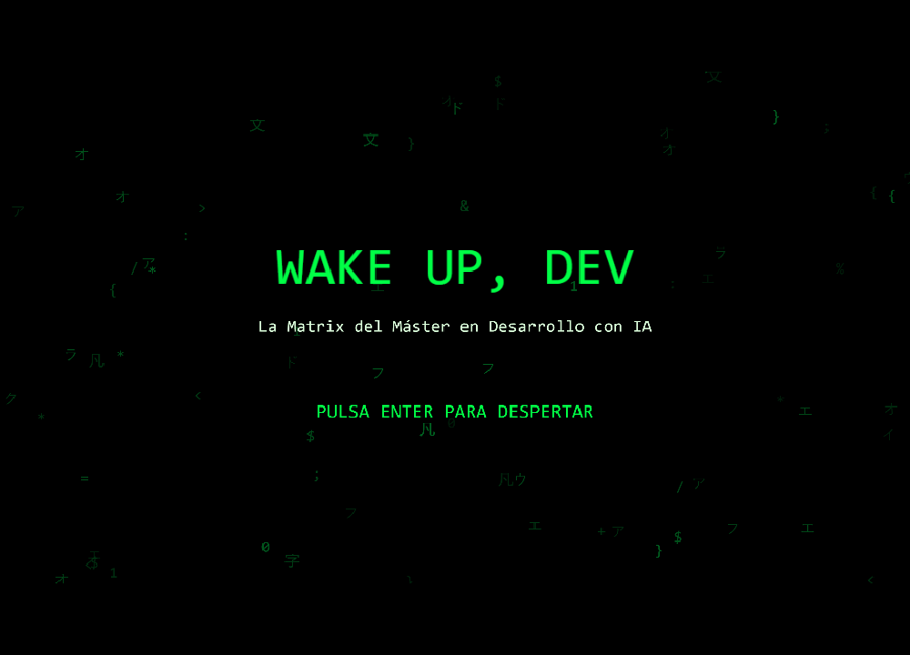
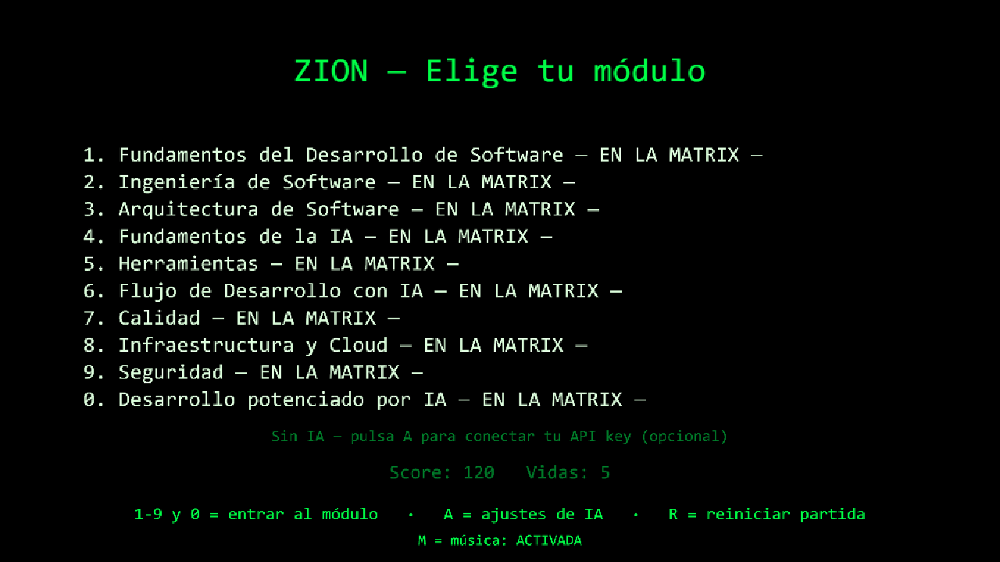
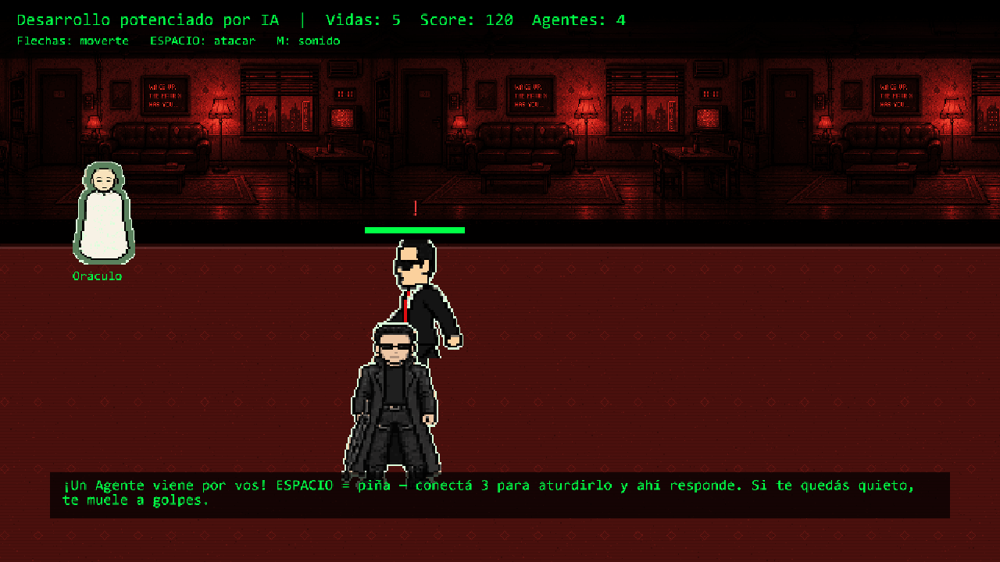
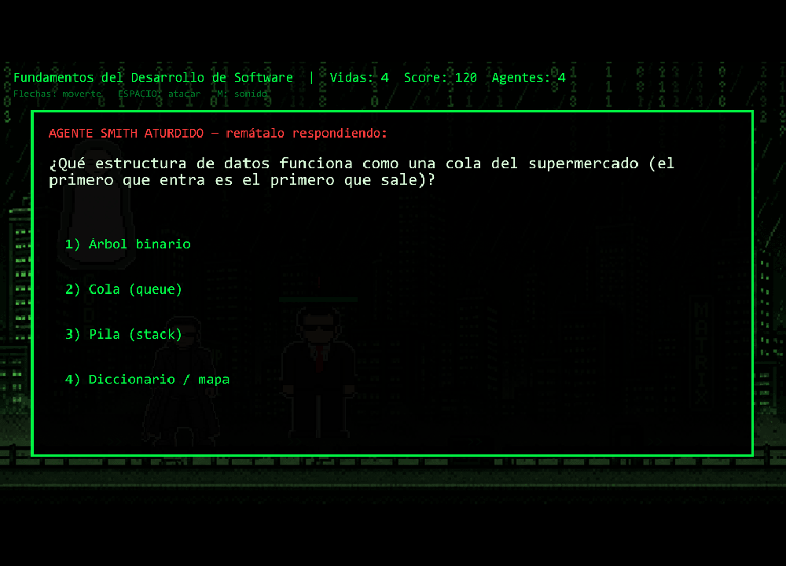
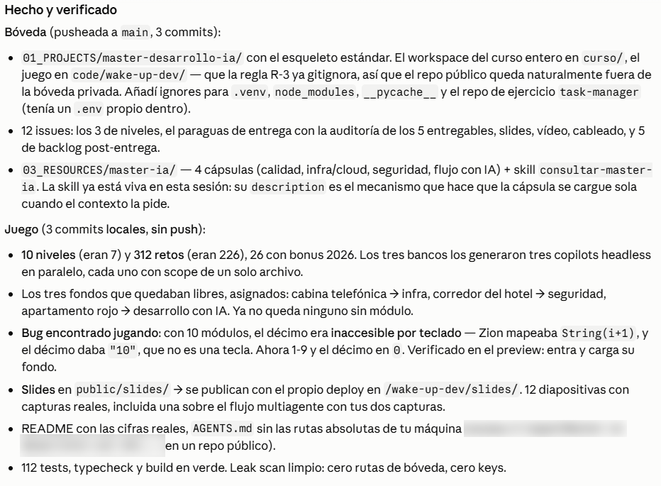
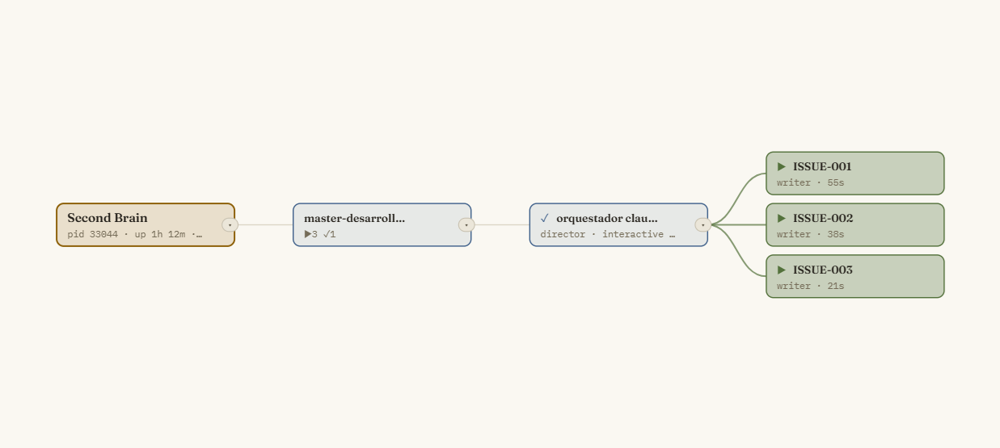
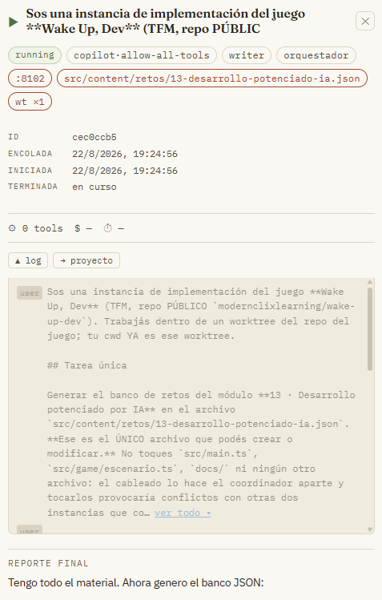
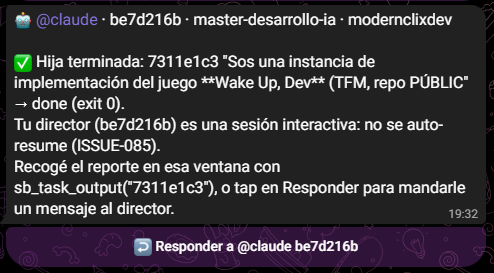

Trabajo de Fin de Máster
WAKE UP, DEV
Un videojuego 8-bit inspirado en Matrix que repasa el máster jugándolo. La IA no es solo la herramienta con la que se construyó: es parte del gameplay.
El problema
Un máster se olvida. Un juego se repite.
Terminás dieciséis módulos, cientos de notas, y a los tres meses te acordás de la mitad. Quería un repaso que no se sintiera como un repaso.
Sos Neo. Cada módulo del máster es un nivel de la Matrix custodiado por Agentes Smith — los bugs, los antipatrones, la deuda técnica. Los peleás cuerpo a cuerpo y, al aturdirlos, respondés un reto salido del contenido real del curso. Fallás, perdés una vida. Acertás, el Agente cae.

Traducción
Matrix como metáfora del máster
- Zion — el hub: elegís módulo, ves score y vidas
- Niveles — un módulo del máster cada uno, con su escenario propio
- Agentes Smith — bugs y antipatrones: se pelean y se responden
- Agente Jefe — cierra el módulo, y dispara
- El Oráculo — NPC con IA que responde dudas del módulo actual
- Píldora roja — el juego conectado a instancias headless reales

Mecánica
Pelear, aturdir, responder


El combate no es decorado. Sin el stagger —que tu golpe interrumpa el del Agente— pelear bien igual te costaba una vida cada dos segundos. Lo descubrió un bot de Playwright muriendo con respuestas perfectas.
Cómo está hecho
El dominio no sabe que existe un canvas
src/domain dominio puro y testeado — retos, quiz engine, sesión, combate
nunca importa de Kaplay, del DOM ni de la capa de IA
src/content bancos JSON — el contenido es data, no código
src/ai AIProvider (interfaz) + adapters intercambiables
├── Anthropic · OpenAI · Gemini (BYOK, browser directo)
├── ClaudeHeadless / CopilotHeadless (bridge local)
└── StaticFallback el juego SIEMPRE funciona
src/game presentación — escenas Kaplay + overlays DOM
bridge/ server local que spawnea el CLI headless (Node puro, sin deps)
Tres reglas sostienen todo: el dominio es puro, el contenido es data, y cualquier feature de IA degrada al fallback sin penalizar al jugador.
Data-driven
Agregar un módulo es agregar un JSON
notas markdown del módulo
↓ generación asistida por IA
retos candidatos (JSON)
↓ revisión humana obligatoria
↓ test de invariantes en CI
banco del nivel
El gate automático valida ids únicos, rangos, fallbacks y que cada banco traiga al menos un reto de estado del arte 2026. La revisión humana decide si un reto enseña.
Un sesgo real, y su backstop
Los primeros bancos generados traían la respuesta correcta casi siempre en la primera
opción: el juego era ganable apretando 1 sin leer.
Se arregló en dos capas: la regla de generación reparte la posición, y el motor baraja las opciones en cada partida. Así el juego no es explotable aunque un banco venga sesgado.
AGENTE SMITH ATURDIDO — remátalo respondiendo:
El juego carga los retos desde archivos JSON y un test valida que ningún banco tenga ids repetidos. ¿Qué compra ese test, exactamente?
- Que el contenido sea correcto y esté bien explicado
- Que el juego cargue más rápido
- Que el error aparezca al abrir el PR, no jugando el nivel
- Que no haga falta revisar los retos a mano
Un gate automático no valida el contenido: valida las invariantes. Confundir las dos cosas es lo que hace que uno confíe de más en su CI.
Features, no demos
La IA como gameplay
El Oráculo
NPC conversacional con el resumen del módulo actual inyectado como contexto. Le preguntás lo que no entendiste, ahí mismo, sin salir del juego.
Retos abiertos
Escribís la respuesta y una IA la califica contra una rúbrica explícita del propio reto. Criterios gradeables, no impresiones. Sin IA, el reto cae a su variante de opciones sin penalizarte.
Smith adaptativo
La dificultad sigue tu desempeño. Tras dos fallos podés pedir una pista generada al Oráculo. Dominás el tema, sube la apuesta.
Los mismos patrones que usé para construir el juego —prompts con rúbrica, headless, fallbacks— terminaron siendo mecánicas del juego.
El diferencial
El juego lanza agentes de verdad
juego → bridge local (Node) → claude -p
→ copilot headless
En modo developer, cada consulta al Oráculo lanza una instancia headless real del CLI de Claude Code o de GitHub Copilot. No es una simulación del patrón de orquestación de agentes que enseña el máster: es el patrón, corriendo, visible desde dentro del juego.
Decisiones de seguridad
- El prompt va al CLI por stdin, nunca como argumento de shell — inyección de comandos
- El bridge escucha solo en
127.0.0.1 - En la web desplegada no hay bridge: mixed content lo impide, y está documentado
Claves y coste
Sin backend, sin claves mías, sin factura
- La API key es del jugador y vive solo en su
localStorage - Las llamadas van directo al proveedor: no hay backend intermedio que pueda filtrar nada
- Cero claves propias en el bundle — verificable en el
dist/construido - Sin key, el juego se juega entero con el banco estático
El hueco, dicho en voz alta
Quien abra la URL pública sin API key ve el juego completo, pero no las features de IA. Es el precio de no montar un backend con costes.
Está en el backlog como decisión abierta: proxy serverless con rate limit, modo demo pregrabado, o dejarlo así y documentarlo mejor en la propia UI. La restricción firme no se mueve: nunca una clave propia en el cliente.
Gates
El gate no es la opinión de nadie
- Vitest sobre el dominio, la capa de IA (adapters con
fetchmockeado) y las invariantes de todos los bancos - GitHub Actions — typecheck + tests + build en cada push y cada PR
- Deploy automático a GitHub Pages: main en verde es main publicado
- Verificación en navegador real antes de commitear
Handlers de teclado sin cancelar que bloqueaban el segundo encuentro.
El parser de Kaplay rompiéndose con corchetes. Texto verde ilegible sobre fondo blanco. Un
décimo módulo inalcanzable porque la tecla se calculaba como String(i+1) y daba
"10". Ninguno lo vieron los tests: todos salieron jugando.
El proceso
Un coordinador, varias manos
El juego se construyó con el flujo que enseña el propio máster, sobre un sistema personal de orquestación: un coordinador reparte el trabajo en instancias headless que corren en paralelo, cada una en su worktree de git.
El reparto se hace por blast radius. Los tres últimos bancos de contenido se generaron a la vez porque cada instancia tocaba un solo archivo distinto; los archivos compartidos los toca un único agente al integrar.
El humano no copia prompts ni espera: revisa, decide y mergea.

De dónde sale el contenido
Las notas dejan de ser un archivo muerto
Los dieciséis módulos del máster dejaron unas 300 notas en markdown. De ahí salen los retos del juego — pero morirse en una carpeta habría sido el destino natural del resto.
Así que las destilé en cápsulas de conocimiento: un módulo por archivo, con principios accionables, checklist, gates y antipatrones. Cualquier proyecto puede abrir solo la que aplica a lo que está decidiendo, en vez de releer el curso entero o no consultarlo nunca.
Todo el sistema son directorios y archivos de texto versionados en git. Sin base de datos, sin servicio de pago: el esqueleto es el árbol de carpetas.

De punta a punta
Reparte, trabaja, avisa
1 · Reparte

Tres writers arrancan a la vez, una por módulo.
2 · Trabaja

Cada una declara su alcance: un archivo, y nada más.
3 · Avisa

Al terminar, el aviso llega al móvil. El humano vuelve solo cuando hace falta.
Qué me llevo
Lo que el proyecto me enseñó
- Separar dominio de presentación no es ceremonia: es lo que hizo que agregar un módulo sea agregar un archivo
- Un gate automático vale más que una intención — atajó bancos que yo habría dado por buenos
- La IA acelera de verdad cuando le das criterios verificables, no cuando le pedís que adivine
- Lo que no se juega, no se sabe si funciona
Qué sigue
- Los módulos que faltan: solo agregar sus JSON
- Decidir la estrategia de IA para quien juega sin API key
- Más mecánicas por nivel, no una sola para todos